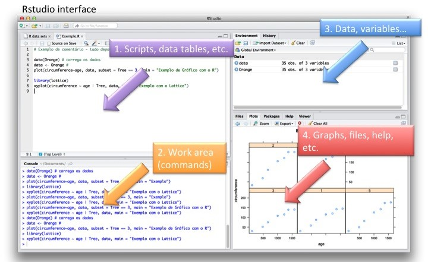

Vector and raster packages, spatial operations, cartography.
What is R and RStudio?
The Language (R)
R is a powerful programming language used for data analysis and visualization
Wide range of packages and libraries, making it suitable for various scientific disciplines, including spatial data analysis in wildlife and fisheries science
The IDE (RStudio)
Integrated development environment for R (and Python, Julia)
Interface with data sources and tables, allows for code completion and syntax highlighting
Alternatives = VSCode, Jupyter Notebook

RStudio interface
Why Use R for Spatial Data?
Open source (free) option to build maps, perform analyses, and convert data
If working with non-profits or in academia, many entities have expertise in R
Allows for reproducible science and workflows (sound familiar?)
Supplementary material for manuscripts
Co-workers can use entire scripts or snippets to update models and maps
Integrates with thousands of other R packages for modeling, spatial statistics, and visualization
Well-documented and plenty of examples from a continuously growing community of R users
Basics of R Programming
Each programming language has specific ways of doing things, and R is no different.
Data Structures
Vectors:
One-dimensional arrays that can hold numeric, character, or logical values.
# Numeric vectorc(1, 2, 3, 4, 5)
[1] 1 2 3 4 5
# Character vectorc("apple", "banana", "orange", "grape", "kiwi")
[1] "apple" "banana" "orange" "grape" "kiwi"
# Logical vectorc(TRUE, FALSE, TRUE, FALSE, TRUE)
[1] TRUE FALSE TRUE FALSE TRUE
Matrices:
Two-dimensional arrays with rows and columns of the same data type.
# Create a matrix# Create a 3x3 matrix with data filled by row-wisematrix(1:9, nrow =3, ncol =3, byrow =TRUE)
[,1] [,2] [,3]
[1,] 1 2 3
[2,] 4 5 6
[3,] 7 8 9
Data Frames:
Tabular data structures, similar to spreadsheets, consisting of rows and columns.
# Create a data framedata.frame(Name =c("John", "Alice", "Bob", "Emily"),Age =c(25, 30, 35, 28),Gender =c("Male", "Female", "Male", "Female"),stringsAsFactors =FALSE)
Name Age Gender
1 John 25 Male
2 Alice 30 Female
3 Bob 35 Male
4 Emily 28 Female
Lists:
Collections of objects, which can be of different data types.
Packages are collections of functions in R. They extend the functionality by providing additional tools, common workflows, and accessible datasets for various purposes.
The Tidyverse
The tidyverse is a collection of R packages designed for data science and statistical analysis. It provides a cohesive framework for working with data by emphasizing consistency, readability, and efficiency.
The core philosophy of the tidyverse centers around the principles outlined in the “tidy data” concept, where datasets are organized in a structured format with each variable forming a column, each observation forming a row, and each type of observational unit forming a table.
ggplot2 - flexible package for creating static and interactive visualizations.
dplyr - provides a grammar of data manipulation, providing a consistent set of verbs.
forcats - provides a suite of useful tools that solve common problems with factors.
Common R Spatial Packages
There are likely over 100 R packages that can handle some aspect of spatial data, these are the most popular ones that we will explore some in the workshop. A more comprehensive list can be found here: https://cran.r-project.org/web/views/Spatial.html
Spatial packages in R are currently in a transition period, with many historically common packages being replaced by newer, more performant varieties.